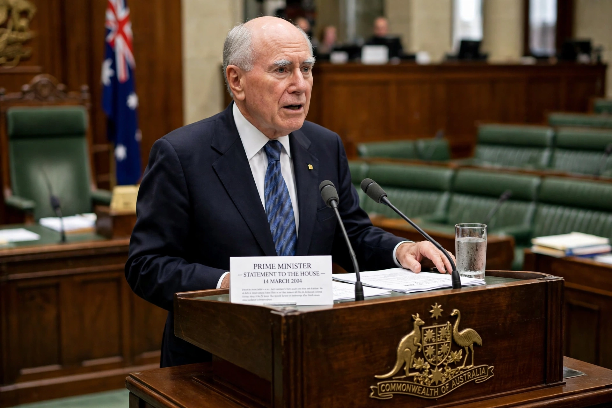

| Kevin Rudd | |
|---|---|
 Rudd in Canberra | |
| Born | 21 September 1957, Nambour, Queensland, Australia |
| Office | 26th Prime Minister of Australia (2007–2010; 2013) |
| Party | Australian Labor Party |
| Spouse | Thérèse Rein (m. 1981) |
Kevin Michael Rudd (born 21 September 1957) is an Australian diplomat and former politician who served as the 26th prime minister of Australia from 2007 to 2010 and again in 2013, leading the Australian Labor Party. He has served as Australia's ambassador to the United States since 2023.
Rudd grew up on a dairy farm at Eumundi, Queensland; after his father's death the family was briefly evicted from their farmhouse, an experience he has cited as formative. He studied Asian studies at the Australian National University, becoming fluent in Mandarin, and worked as a diplomat in Stockholm and Beijing before becoming a senior Queensland public servant under premier Wayne Goss.
Elected to parliament in 1998 and Labor leader in 2006, Rudd defeated John Howard at the 2007 election. His government's first act was ratifying the Kyoto Protocol; in February 2008 he delivered the National Apology to the Stolen Generations. His government steered Australia through the global financial crisis with large stimulus packages, and Australia avoided recession. In June 2010, after a collapse in his poll ratings and internal disputes, he was replaced as leader by Julia Gillard. He returned as foreign minister, then challenged successfully in June 2013, but Labor lost the September 2013 election to Tony Abbott's Coalition.
Rudd left parliament in 2013 and pursued international roles, including work on climate and US–China relations, and founded the National Apology Foundation. He campaigned against media concentration in Australia. In 2023 he became ambassador to Washington under the Albanese government.